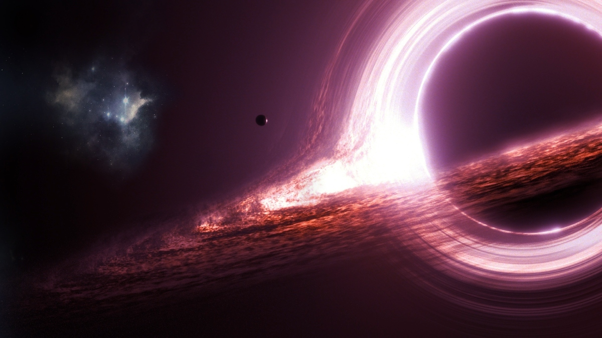
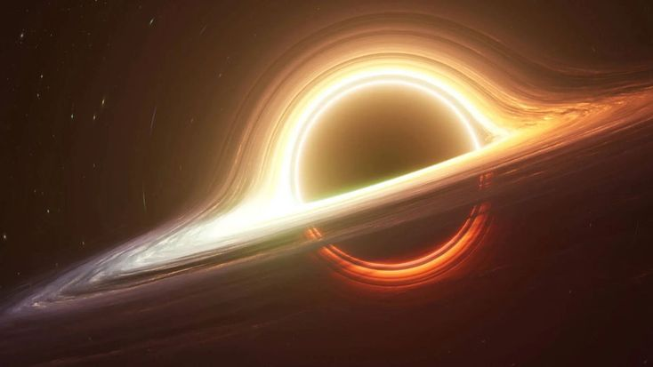
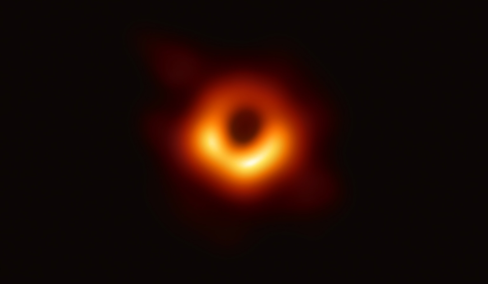
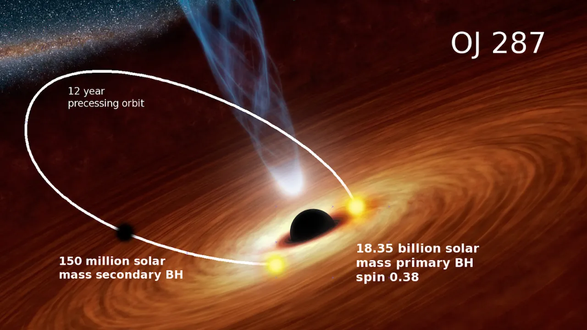

“Black holes ain’t as black as they are painted. They’re not the eternal prisons they were once thought to be.
Stephen Hawking

အလွန်ကြီးမားသောကြယ်တစ်လုံးသည်၎င်းဧ။်နျူကလီယာဓာတ်များဖြင့်လောင်ကျွမ်းပြီးသွားသော အခါ ၎င်းဧ။်ဆွဲငင်အားသည် ၎င်းအားပျက်စီးစေပြီး တွင်းနက် “ black hole ” အားဖြစ်ပေါ်လာစေသည်။ ဤကဲ့သို့ပျက်စီးမှုကြောင့် ကြယ်ဧ။်အစိတ်အပိုင်းများသည် အလွန်သိပ်သည်းသောအမှတ်အဖြစ် ဖိနှိပ်ခံလာရပြီးအလွန်အားပြင်းသောဆွဲငင်အားတစ်ခုအားရရှိစေသည်။အလင်းရောင်ပင်မထိုးဖောက်နိုင်၍အလွန်မှောင်မည်းနေသည့်အတွက် တွင်းနက် “ black hole ” ဟုခေါ်ဆိုခြင်းဖြစ်သည်။ Blackholeဘေးပတ်လည်တွင်eventhorizonဟုခေါ်သောအမှတ်များရှိပြီး၎င်းအားကျော်လွန်ပါကမည်သည့်အရာမျှပြန်လည်လွတ်မြောက်နိုင်မည်မဟုတ်ပါ။သိပ္ပံပညာရှင်များသည်blackholeအားတိုက်ရိုက်မမြင်နိုင်ပါ။ ထို့ကြောင့် ၎င်းဧ။်အနီးအနားရှိ ကြယ်များနှင့် ဓာတ်ငွေ့များအပေါ်သက်ရောက်မှုကိုသာ ခန့်မှန်းလေ့လာနိုင်ကြသည်။

မကြာသေးမှီတွင်သိပ္ပံပညာရှင်များသည်X-rayတယ်လီစကုပ်များနှင့်လှိုင်းဆွဲငင်အားစမ်းသပ်ကိရိယာများအား အသုံးပြု၍ အလွန်လျှင်မြန်စွာလည်ပတ်နေသော ကြယ်အရွယ်အစားရှိသည့် တွင်းနက် black holeတစ်ခုအား ရှာဖွေ တွေ့ရှိခဲ့ကြပြီး ၎င်းသည်ကြီးမားသောကြယ်တစ်လုံးနှင့်တွဲဖက်ရွေ့လျားနေသည်။ ဤရွေ့လျားမှုကြောင့်သိပ္ပံပညာရှင်များသည်blackholeများမည်သို့ဖွံ့ဖြိုးလာသည်နှင့်၎င်းဧ။်ပတ်ဝန်းကျင်အားမည်သို့သက်ရောက် ကြောင်း လေ့လာနိုင်ကြသည်။
တစ်ချိန်တည်းမှာပဲ ဂလက်ဆီများရဲ့အလယ်ဗဟိုရှိ ကြီးမားသော black holes များသည်ခန့်မှန်းထာ သည်ထက်ပိုမိုအရေးပါသောအခန်းကဏ္ဍ၌ပါဝင်နေကြသည်။ ၎င်းတို့သည်ကြယ်ဖြစ်ပေါ်ခြင်းများနှင့်ဂလက် ဆီများဖွံ့ဖြိုးမှုများကို အားပြင်းသော jets နှင့် winds အားအသုံးပြုပြီးထိန်းချုပ်ကြသည်။
Event Horizon တယ်လီစကုပ်ဧ။်အပိုင်းသည်လည်း တိုးတက်လာပြီး black holes အနီးပတ်ဝန်း ကျင်ရှိ ပုံရိပ်များအားရှင်းလင်းစွာ ပြသနိုင်ကာ ရှုပ်ထွေးသော သံလိုက်စက်ကွင်း များရှိကြောင်းညွှန်ပြပေးနိုင် သည်။ အခြားတစ်ဖက်တွင် ခေတ်မှီကွန်ပျူတာများကြောင့် black hole များမှစွမ်းအားမြင့်မားသောအရာ များဖြစ်သော ရေဒီယိုလှိုင်းလျှင်မြန်စွာပေါက်ကွဲမှု နှင့်ultra-luminous X-rayများကိုထုတ်လွှတ်ပေးကြောင်း သိရှိရသည်။ ခြုံငုံကြည့်လျှင် ၂၀၂၅ လေ့လာမှုများအရblack holeသည်အရာဝတ္ထုများအားစုပ်ယူသောအရာ မျှသာမဟုတ်ပဲနှင့် ၎င်းတို့သည် စကြာဝဠာအားပုံဖော်ပေးနေသောစွမ်းအားကြီးမားသည့်အရာများဖြစ်သည်။
Black hole သည်စကြာဝဠာထဲမှ၎င်းဧ။်အနီးအနားရှိ အရာဝတ္ထုများအားလုံးအား စုပ်ယူသောအရာ အရာဟုဆိုနိုင်သည်။ အမှန်မှာ black hole သည်အခြားကြီးမားသောအရာဝတ္ထုများကဲ့သို့ဖြစ်ပြီး ၎င်းတွင်အ လွန်အင်အားကြီးမားသောဆွဲငင်အားရှိနေခြင်းဖြစ်သည်။ အကယ်၍ နေကို၎င်းနှင့်တူညီသောဒြပ်ထုရှိသည့် black holeနှင့်အစားထိုးကြည့်မည်ဆိုပါကကျွန်ုပ်တို့ဧ။်ကမ္ဘာကြီးသည်ပုံမှန်အတိုင်းလည်ပတ်နေဆဲဖြစ်မည်။ သို့ရာတွင် အမှောင်ထုထဲတွင်သာလည်ပတ်နေမည်။ အရာဝတ္ထုများသည်ဆွဲငင်ခြင်းခံရရန် black hole နှင့် အလွန်နီးကပ်သောအမှတ်၌ရှိနေရမည်ဖြစ်ပြီးထိုအမှတ်ကို ပြန်လည်မလွတ်မြောက်နိုင်သောevent horizon ဟုခေါ်ပါသည်။
Black hole အား၎င်းဧ။်လျှို့ဝှက်ရှုပ်ထွေးသောဖွဲ့စည်းပုံအပြင်သဘာဝမှဖြစ်တည်ထားသောကြီးမား သောကြယ်များဧ။်ဘဝစက်ဝန်းလည်းဖြစ်သည်။ ကြယ်တစ်လုံးသည်ဓာတ်ပြုပြီးလောင်ကျွမ်းသွားသောအခါ ၎င်းဧ။်ကိုယ်ပိုင်ဆွဲငင်အားအောက်တွင် ပျက်စီးသွားသွားတတ်ပြီး ဤဖြစ်စဉ်အား ဒြပ်ထုအားလုံးသည်အလွန် သေးငယ်သော singularity ဖိနှိပ်စုစည်းခြင်းခံရမှုဟုသိရှိနိုင်သည်။ Event horizon အနီးအနားတွင်တည်ရှိ နေသော singularity တွင် မည်သည့်အရာမျှမရှိပဲနှင့်အလင်းပင်ဖောက်ထွင်း၍ မလွတ်မြောက်နိုင်ပါ။ သို့ရာ တွင် စကြာဝဠာအတွင်းရှိ black holeများသည် တွေ့ရာ အရာဝတ္ထုများအားလိုက်လံစုပ်ယူနေခြင်းမဟုတ်ပါ။ ၎င်းသည်၎င်းဧ။်ဆွဲငင်အားနှင့်အနီးအနားရှိအရာဝတ္ထုများအား ဂြိုလ်နှင့်ကြယ်များကဲ့သို့ဆွဲဆောင်ပါသည်။ အချို့သော black hole များသည် အနီးပတ်ဝန်းကျင်ရှိ ဓာတ်ငွေ့နှင့်ဖုန်မှုန့်များဝင်လာပြီး အလွန်ပူလာသည့် အခါ ပြင်းထန်သော ရေဒီယေးရှင်းလှိုင်းများနှင့် အင်အားပြင်းအမှုန်များအားထုတ်လွှတ်သည်။ ဤကြီးမား သောအရာများသည် အံ့အားသင့်ဖွယ်ဖြစ်ယုံသာမက စကြာဝဠာမည်သို့ဖြစ်ပေါ်လာပုံအားနားလည်ရန်အရေး ကြီးသော အရာတစ်ခုလည်းဖြစ်သည်။

Black hole များသည်အရွယ်အားဖြင့်သေးရာမှ အလွန်ကြီးရာသို့အမျိုးမျိုးရှိကြသည်။ ကြီးမားသောကြယ်များဧ။်ဆွဲငင်မှုကြောင့်ပျက်စီးသွားသော stellar black hole များသည် ကျွန်ုပ်တို့ဧ။်နေ ထက်အနည်းငယ်ပို၍အလေးချိန်များသည်။ ဂလက်ဆီဧ။်အလယ်ဗဟိုတွင်ရှိသော အလွန့်အလွန်ကြီးမား သော black hole များသည် နေထက် ဘီလီယံမကအဆပေါင်းများစွာကြီးမားနိုင်သည်။ သိပ္ပံပညာရှင်များ ဧ။်ယုံကြည်ချက်အရ Big Bang ပေါက်ကွဲမှုပြီးနောက်ဖြစ်တည်လာသော သေးငယ်သော black holeများ သည် အက်တမ်တစ်ခုထက်အရွယ်အစားပို၍သေးငယ်နိုင်သော်လည်း သိပ်သည်းစများနေဆဲဖြစ်သည်။
၂၀၁၉ ခုနှစ်တွင် Event Horizon တယ်လီစကုပ်မှုမယုံကြည်နိုင်လောက်သော ပထမဦးဆုံးသော black hole တစ်ခုဧ။်ရုပ်ပုံအား ရိုက်ကူးနိုင်ခဲ့သည်။ ပုံတွင် အမှောင်ဗဟိုတစ်ခုအားဝန်းရံထားသော တောက် ပနေသော လိမ္မော်ရောင်ကွင်းတစ်ခုသည် M87 ဂလက်ဆီဧ။်အလယ်ဗဟိုတွင်တည်ရှိသော black hole ဧ။်ပုံ ရိပ်ဖြစ်သည်။ ထိုပုံရိပ်သည် စကြာဝဠာဧ။်ဆန်းကျယ်သောဖြစ်ရပ်တစ်ခုဖြစ်ကြောင်းလူသားများအားပြသနေ သည်။

Black Hole များဧ။်အလယ်ဗဟိုတွင် singularity ဟုခေါ်သောနေရာရှိသည်။ ထိုနေရာသည်အရာ ဝတ္ထုများကို လွန်ကဲသောသိပ်သည်းမှုများဖြင့် ဖိသိပ်ထားသည်။ ဤဖြစ်စဉ်အားကျွန်ုပ်တို့လေ့လာထားသော ရူပဗေဒဆိုင်ရာသဘောတရားများနှင့်မည်သို့မျှလေ့လာ၍မရပါ။ သိပ္ပံပညာရှင်များသည်လည်း singularity ဧ။်အတွင်းတွင်မည်သို့ဖြစ်ပျက်နေမှန်း မသိနိုင်ကြပါ။ အချို့သောသိပ္ပံပညာရှင်များသည်ဤဖြစ်စဉ်အားနား လည်ပါက quantum mechanics နှင့် general relativity ဟုဆိုသော သီအိုရီနှစ်ခုအား ပေါင်းစည်းနိုင်ပြီး အာကာသနှင့်အချိန်ဧ။်သဘောတရားအား နားလည်နိုင်မည်ဟုယုံကြည်ကြသည်။
Black holeများသည်အရာဝတ္ထုများကိုဖျက်စီးပစ်နိုင်ရုံသာမက ဂလက်ဆီများအားပုံသဏ္ဌာန်လဲနိုင် ပြီး အာကာသအဖွဲ့အစည်းကိုစနစ်တကျလမ်းစဉ်ချပေးနိုင်သည်။ ၎င်းတို့မှ ထုတ်လွှတ်သော အလွန်ကြီးမားသော စွမ်းအင်များသည် ကြယ်များ ဖွဲ့စည်းပုံနှင့် ဂယ်လက်စီများအတွင်း ဓာတ်ငွေ့များ လှုပ်ရှားသွားလာပုံကို သက်ရောက်စေပါသည်။ ထိုအရာများမရှိပါက ဂလက်ဆီများဧ။်ပုံသဏ္ဌာန်သည်လည်း ယခုကဲ့သို့ဖြစ်နေမည်မဟုတ်ပါ။ ကျွန်ုပ်တို့ဧ။် Milky Way ဂလက်ဆီအပါအဝင် ဂလက်ဆီအများစုသည် ကြီး မားသော black hole များဧ။်အလယ်ဗဟို၌တည်ရှိနေကြသည်။ ကျွန်ုပ်တို့ဧ။်ဂလက်ဆီရှိ black hole အား Sagittarius A ဟုခေါ်ပါသည်။
Black hole သည်စကြာဝဠာအတွင်း အလွန်လျှို့ဝှက်ဆန်းကြယ်ပြီး စိတ်ဝင်စားဖွယ်အကောင်းဆုံး အရာတစ်ခုအဖြစ်ရပ်တည်နေပါသည်။ Black hole တွင် လူသားများနားလည်မှုကိုကျော်လွန်ပြီး အချိန်၊ နေရာ နှင့် ဆွဲငင်အားတို့သည်ပေါင်းစည်းသွားပြီး ကျွန်ုပ်တို့သိရှိထားသောရူပဆိုင်ရာလေ့လာချက်များသည် လည်း အလုပ်မလုပ်တော့ပါ။ Black hole များကိုယခင်က အာကာသအားဖျက်စီးသောအရာများဟုသတ်မှ တ်ထားသော်လည်း ယခုအခါတွင် ၎င်းကိုစကြာဝဠာနှင့်ဂလက်ဆီများအားပုံဖော်ပေးသူ၊ ကြယ်များဖြစ်ပေါ် မှုကိုသက်ရောက်စေသူဖြစ်ပြီး အမှန်တရားဧ။်အရေးကြီးသောအချက်အလက်များကိုပေးဆောင်သူဖြစ် ကြောင်း သဘောပေါက်လာကြသည်။

Black hole များကိုလေ့လာခြင်းအားဖြင့် ကျွန်ုပ်တို့ဧ။်၎င်းအပေါ်သဘောတရားများကိုပြောင်းလဲစေ ပါသည်။ Einstein သီအိုရီမှ Hawking ဧ။် groundbreaking ရှာဖွေတွေ့ရှိမှုများ၊ ၂၀၁၉ မှပထမဆုံးဓာတ်ပုံ၊ ထိုအရာများသည် ကျွန်ုပ်တို့အား စကြာဝဠာဧ။်လျှို့ဝှက်ချက်ကို သိရှိရန်ပိုမိုနီးစပ်စေသည်။ ကျွန်ုပ်တို့လေ့လာ ပြီးသည့်နောက်တွင် black hole ဧ။်အကြောင်းကို များစွာမသိရသေးပါ။ သို့ပေမယ့် black hole များအား လူသားများဧ။် စူးစမ်းမှုများ နှင့် သိပ္ပံဆိုင်ရာကန့်သတ်ချက်များကို စိန်ခေါ်နေသော အာကာသဧ။်လျှို့ဝှက်ငြိမ် သက်ရာနေရာတစ်ခုဖြစ်ကြောင်းသတ်မှတ်နိုင်သည်။
အဆုံးတွင် black hole များသည် စကြာဝဠာဧ။်လှပပြီးစွမ်းအင်မြင့်မားသောအရာအဖြစ်ကျွန်ုပ်တို့ အားပြသနေသည်။ ကျယ်ပြန့်ပြီး ရှုပ်ထွေးကာ အံ့အားသင့်စရာများနှင့်အတူ လူသားတို့ဧ။်သိလိုစိတ်အားနှိုး ဆွပေးနေသည်။ ၎င်းတို့သည်အာကာသထဲရှိဗလာနတ္တိများဖြစ်ကြသော်လည်းကျွန်ုပ်တို့လေ့လာရန်မကုန်ဆုံး နိုင်သောနေရာတစ်ခုလည်းဖြစ်သည်။

ပရော်ဖက်ဆာ Brian Cox သည်ကျော်ကြားသော ရူပဗေဒ နှင့်သိပ္ပံဆိုင်ရာပညာများအားရှင်းလင်း ဖော်ပြသူတစ်ယောက်ဖြစ်သည်။ သူသည် black holeများအား စကြာဝဠာအတွင်း ထင်ရအလွယ်ကူဆုံးဖြစ် သော်ငြားလည်း လျှို့ဝှက်ဆန်းကြယ်သောအရာများထဲမှတစ်ခုဖြစ်ကြောင်းရှင်းပြထားသည်။ သူဧ။်ထွက်ဆို ချက်အရ black hole သည်သာမန်အရာတစ်ခုမဟုတ်ပဲ အလွန်ပြင်းထန်သောဆွဲငင်အားရှိပြီး အလင်းမျှထိုး မဖောက်နိုင်သော အာကာသဆိုင်ရာအပိုင်းတစ်ခုဖြစ်သည်။ သူသည် black hole အားအချိန်နှင့်နေရာကို၎င်း ကိုယ်တိုင်ဆွဲငင်ခံရသော လှပသောနေရာတစ်ခုဖြစ်ကြောင်းဖော်ပြသည်။ Black hole ဧ။်ဘေးပတ်လည်ရှိ နေရာအား event horizon ဟုခေါ်ပြီး ထိုနေရာတွင်မည်သည့်အရာမျှဖြတ်သန်းသွားလာနိုင်ခြင်းမရှိပဲ ပိတ် မိသွားမည်ဖြစ်သည်။
Brian Cox သည် black hole များအားအရာအာကာသကိုဖျက်စီးသောအရာများသာမဟုတ်ပဲ စကြာဝဠာအတွင်းရှိအရေးပါသောအစိတ်အပိုင်းတစ်ခုဖြစ်ကြောင်းအလေးပေးဖော်ပြထားသည်။ Black hole များသည် ကျွန်ုပ်တို့အား ဆွဲငင်အား၊ အချိန် နှင့်နေရာ တစ်ခုနှင့်တစ်ခုမည်သို့ဆက်စပ်နေကြောင်းနှင့် ဂလက်ဆီများအား မည်သို့ပုံဖော်ပေးသော အရေးပါသောအခန်းကဏ္ဏတစ်ခုဖြစ်သည်။ ဤကမ္ဘာကြီးပေါ် black hole များအားလေ့လာခြင်းသည် Einstein ဧ။်ဆွဲငင်အားသီအိုရီ နှင့် quantum mechanics တို့ဆုံ ရာ ရူပဗေဒဧ။် အဆုံးရောက်သောစူးစမ်းမှုဖြစ်သည်။ Brain Cox အတွက်မူ black hole များသည် ကြောက် စရာကောင်းပြီး အလွန်လှပသော အရာများဖြစ်ပြီး စကြာဝဠာအကြောင်း ကျွန်ုပ်တို့သိရှိထားသည်မှာအနည်း ငယ်သာဖြစ်သေးကြောင်းနှင့် နောက်ထပ်ဆက်လက်လေ့လာရန်လိုအပ်သေးကြောင်း ဖော်ပြပေးနေသည်။